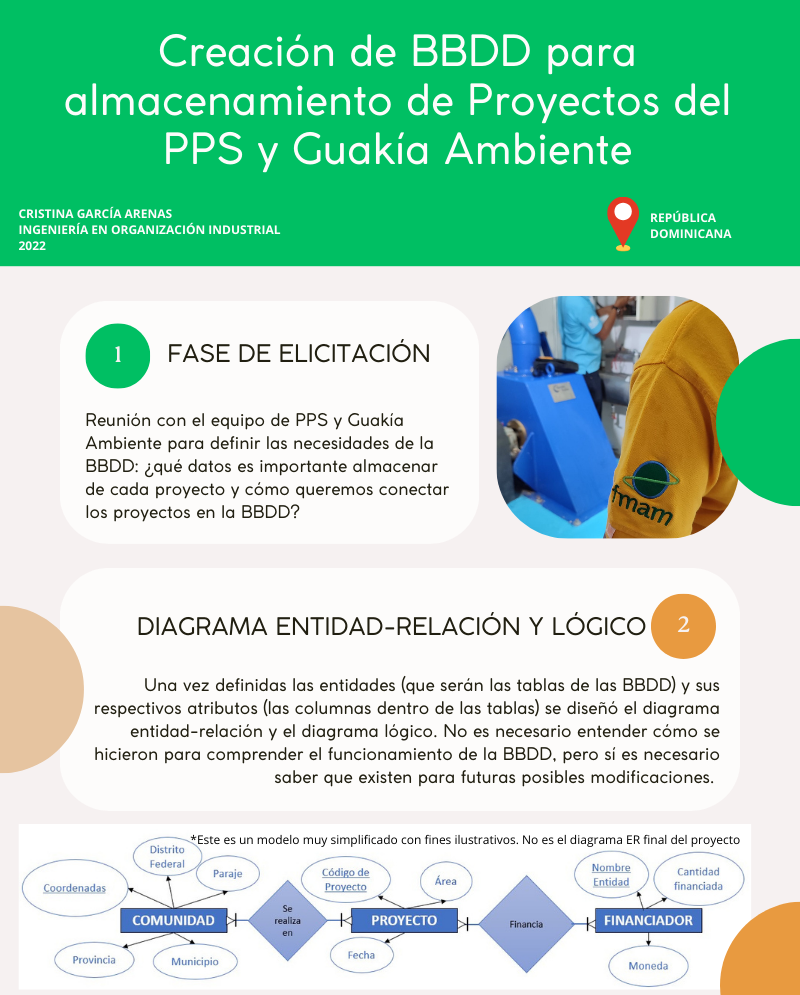
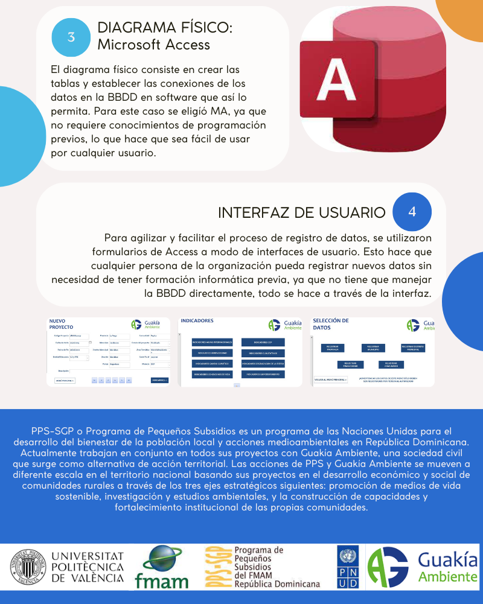
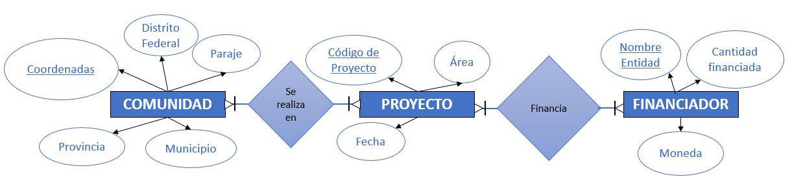
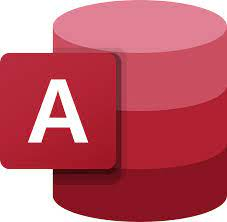
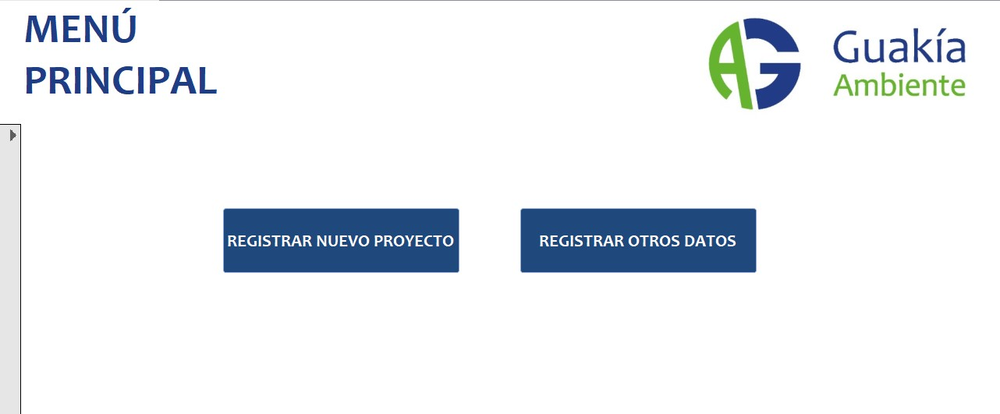
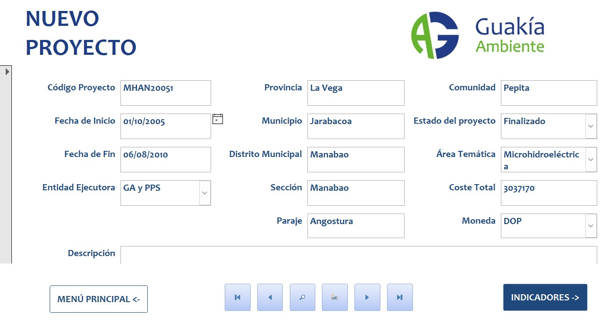
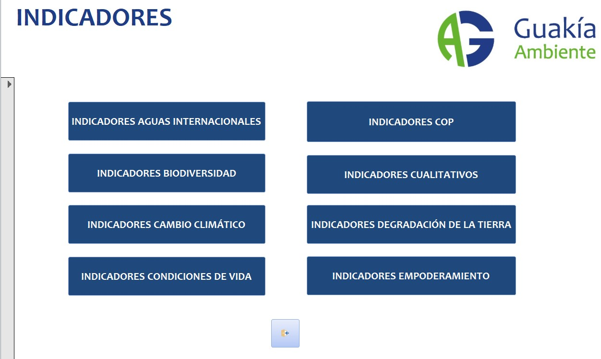
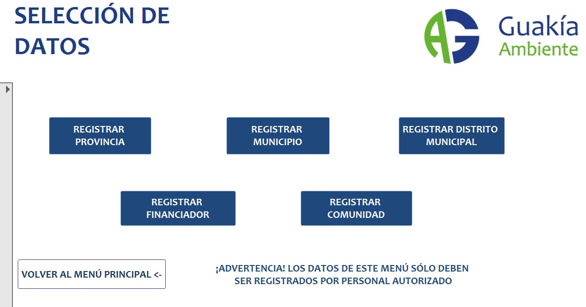

Please rotate your device to landscape mode to enjoy a top-nocch experience and resize if needed.
Please rotate your device to landscape mode to enjoy a top-nocch experience and resize if needed.


[001]UX Research
Users of this project are the team members of PPS-DOM, a program of the United Nations and the local NGO Guakía Ambiente.
After the interviews we decided to:
- Databases's needs & requirements
- Mandatory data for each project
- How to connect data to the Database
[002]Entity-Relationship Diagram


*This is a highly simplified model for illustrative purposes; it does not correspond to the final complete diagram of the project.

[003]Physical Database Diagram
Connection of data with the Database inside a software that allows it, considering the team's technical skills, we chose the platform:

[004]User Interface




*This is a highly simplified model for illustrative purposes; it does not correspond to the final complete diagram of the project.
PPS-SGP, or the Small Grants Program, is one of the United Nations (UN) groups dedicated to the development of local population welfare and environmental actions in the Dominican Republic. They currently work together on all their projects with Guakía Ambiente, a civil society organization that emerged as an alternative for territorial action.
Basing their projects on the economic and social development of rural communities through the following three strategic pillars: sustainable livelihoods, environmental research, building of capacities and strengthening of local communities.